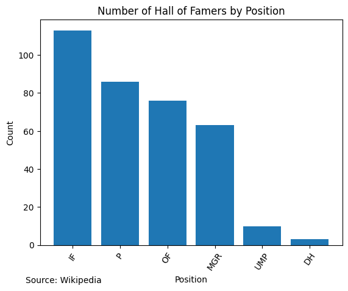
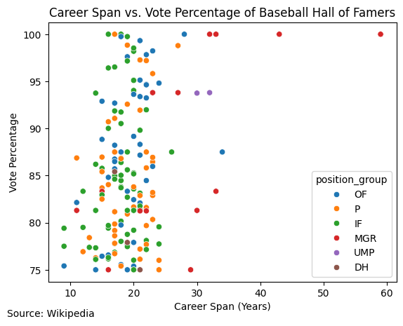

Data Acquisition Project
Baseball Hall of Fame Analysis
Intro
The Baseball Hall of Fame (HoF) is one of the most prestigious institutions in all of American sports. As one of the most historied and iconic sports in the world, being inducted into the HoF is the greatest accomplishment for any baseball player. So, what does it take to get into the Hall of Fame? How long are their careers, and what positions do they play? Which teams have produced the most HoF level talent? Using data, we can find these answers!
A Note on the data I’m using
The data I’m using for this analysis was gathered from this article on Wikipedia which has a list of everyone in the Baseball HoF. If you want to scrape data from Wikipedia yourself, make sure you check out their user-agent policy- any time you scrape from their website, make sure to set your user-agent in their requested format so they can contact you if necessary.
If there’s a table you’re interested in scraping from Wikipedia, it’s actually pretty simple:
- Copy the URL you’re interested in scraping into a Python script
- Use
requests.get()to get the html from the website - Create a
BeautifulSoupobject with the html - Use
BeautifulSoup.find_all("table")to obtain a list of all the tables on the page - Identify which table in the list holds the data you’re looking for
Once this is done, you can convert it to a dataframe (pd.read_html()) for further analysis.
EDA Highlights
Which position produces the most Hall of Famers?
Every position in baseball plays differently. Certain positions, such as Pitchers and Shortstops, tend to have a greater impact on the game because they are involved in the play more often than other positions (e.g. RF). In addition to this, non-playing positions (e.g. Managers, GMs, etc.) are admitted into the HoF with relatively high frequency. Let’s look at the distribution:

As can be seen by the plot, Pitchers are by far the most common position inducted to the HoF. One might think this is a huge discrepancy, but keep in mind that teams often have a rotation of 5 starting pitchers and 5 more relief pitchers that each get significant playing time, whereas for other positions teams will generally only consistently put in one player.
Executives (i.e. GMs) are the next most common position in the HoF, followed by Right Field, First Base, and Shortstop. Out of the main roles people could traditionally play in a team, Third Base has the least players in the HoF. Designated Hitter is a relatively new position, so it makes sense it hasn’t produced too many Hall of Famers.
It might help to view this by position groups, however- infielders and outfielders have very different playstyles, after all.

Infielders are much better represented here, and we can see that more infielders are inducted into the HoF than pitchers. All playable position “groups” have more individuals in the HoF than managerial positions or umpire positions (excluding DH). Infielders tend to have a large impact on a baseball game because of their importance to the defense of a team.
How long are HoF player careers?
Generally, for someone to make an impact on the game of baseball, they need to have a long and sustained career. Let’s look at the span of each HoF inductee’s careers:

Most HoF players have a career that spans about 20 years. Any players inducted to the HoF since 2000 have had a career of 10 years or longer. The shortest career span of any HoF inductee is Morgan Bulkeley, an executive for just two years in the late 1800s. The longest career span of any HoF inductee is John Schuerholz, who has worked an astonishing 59 years in the league and is still active with the Atlanta Braves today.
Does a longer career mean a higher likelihood of getting in?
It might be reasonable to assume that longer careers would correlate with a higher percentage of induction votes. Let’s see:

Looking at the plot, it’s hard to tell if there’s any significant correlation. There is a weak numeric correlation, but it looks like nobody with a career span of just 10 years got over 90% of the possible votes. Those who have effectively devoted their lives to baseball by working more than 40 years were voted in unanimously. The few umpires in the HoF received very high voting percentages as well. The Designated Hitters in the HoF also did not capture a large proportion of votes.
Which team produces the most HoF talent?
To see which teams have the most storied success and have contributed most to the league, we can take a look at which teams have the most players inducted into the HoF. Here are all of the teams that have 10 or more players in the HoF:
| Team | Players |
|---|---|
| New York Yankees | 25 |
| New York Giants | 20 |
| St. Louis Cardinals | 17 |
| Chicago Cubs | 14 |
| Pittsburgh Pirates | 14 |
| Cleveland Indians | 13 |
| Chicago White Sox | 13 |
| Boston Red Sox | 12 |
| Philadelphia Phillies | 11 |
| Brooklyn Dodgers | 11 |
| Detroit Tigers | 10 |
The Yankees and the Giants have contributed the most HoF talent by far compared to any other team. My team, the Chicago Cubs, comes in 5th with 14 players produced. These teams carry some of baseball’s greatest storylines and history.
Where can I learn more?
If you enjoyed learning about these Hall of Fame players, you’ll definitely enjoy taking a trip to Baseball Reference. You can look more into the top HoF players and look at their stats to see just how good they are. Or maybe you can look at the 2-year long career of Morgan Bulkeley and see what he did that merited such a high honor early in the life of American baseball. You can also look at the official MLB website to read up on current top players and significant stories of the past.
Lastly, if you want to see more of the specifics of how this works, my code to perform this analysis can be found on my GitHub. I hope to see you there!